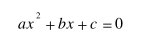
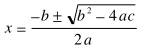

講義に入る前に shori2 にカレントディレクトリを移しておいてください。
自分で関数を定義することによって、 プログラムを複数の部品に分割できます。 また、単純な機能を持つ部品の組み合わせとしてプログラムを記述することで、 プログラムが読みやすくなり保守も容易になります。
この関数を記述している手続き自体も、 文とブロックというさらに小さな要素の組み合わせで構成されています。
文はプログラムの構成要素の最小単位です。
int x; // 宣言文（定義文） x = 10; // 代入文（実行文） sub(x); // 関数呼び出し（実行文） ; // 空文 |
一つの文の終りには、 必ず ;（セミコロン）を置きます。 この例のように複数の文を並べたものを複文と呼びます。 また何も記述されていない（すなわち ; セミコロンだけの）文を空文と呼びます。
文を { } でくくってひとまとめにしたものを、 ブロックと呼びます。
{
int x; // 宣言文（定義文）
x = 10; // 代入文（実行文）
sub(x); // 関数呼び出し（実行文）
...
} |
ブロックの内側に更にブロックを作ることもできます（ブロックの入れ子）。
{
// ここは外側のブロック
int x; // 外側のブロックでの変数定義
x = 10; // 外側の x に代入
{
// ここは内側のブロック
int x; // 内側のブロックでの変数定義
x = 20; // 内側の x に代入
cout << "内側の x=" << x << endl; // 内側の x を出力
}
// ここから再び外側のブロック
cout << "外側の x=" << x << endl; // 外側の x を出力
} |
関数は ブロックに関数名と仮引数の宣言を付けたものだと見ることができます。
#include <iostream.h>
main() {
// ここは外側のブロック
int x; // 外側のブロックでの変数定義
x = 10; // 外側の x に代入
{
// ここは内側のブロック
int x; // 内側のブロックでの変数定義
x = 20; // 内側の x に代入
cout << "内側の x=" << x << endl; // 内側の x を出力
}
// ここから再び外側のブロック
cout << "外側の x=" << x << endl; // 外側の x を出力
} |
上の例ではブロックの中と外で同じ名前の変数 z を定義していますが、 これらは別の変数になります。 内側のブロックでは外側で定義されている同じ名前の変数は 隠蔽されます。 したがって、 このプログラムをコンパイルして実行すると次のような出力を得ます。
% a.out[Enter] 内側の x=20 外側の x=10 （←同じ x なのに値が違う！） |
数値の大小比較を行うには関係演算子を用います。
| 関係演算子 | |
|---|---|
| x > y | x が y より大きいなら真 |
| x >= y | x が y 以上なら真 |
| x < y | x が y より小さいなら真 |
| x <= y | x が y 以下なら真 |
データによっては大小比較が意味を持たないものもあります。 このようなデータでも等値演算子を用いて、 等しいか等しくないかを判断できる場合があります。 なお、C++ では「=」は代入演算子です。 等しいことを調べるのに使う等値演算子は「==」なので気を付けてください。
| 等値演算子 | |
|---|---|
| x == y | x と y が等しいなら真 |
| x != y | x と y が等しくないなら真 |
C++ では、 関係演算や論理演算も加減乗除のような四則演算と同様に式として扱います。 関係演算式や等値演算式の値は「真」「偽」のいずれかになります。 このような値を論理値と呼びます。
| 論理値 | |
|---|---|
| 0 でない値 | 0 |
| 真 | 偽 |
関係演算式や等値演算式の値のデータ型はintで、 下の例では、x と y が等しければ a に 0 でない整数として 1 が、 等しくなければ 0 が入ります。
float x, y; int a; a = x == y; // x と y の比較結果を a に代入 |
なお、文字列同士の字面の比較には strcmp() などのライブラリ関数を用います。 strcmp() は引数に与えられた二つの文字列の内容が同じ時 0 を戻り値として返しますから、下の関係演算では文字列 s の内容が "abc" の時に真になります。 なお strcmp() を使用するときは、 それより前に #include <strings.h> を置いておく必要があります。
#include <strings.h> ... ... strcmp(s, "abc") == 0 ... |
関係演算子の優先順位は等値演算子よりも高くなっていますが、 四則演算（加減乗除）より低くなっています。
| 優先順位 | |||||
|---|---|---|---|---|---|
| 高 | … | 低 | |||
| ( 式 ) | * / % | + - | < <= > >= | == != | = |
したがって下の例では、x + 1 を計算した後、その結果と 10 を比較しています。
x + 1 > 10 |
論理演算は関係演算などによって得られる論理値を対象とした演算です。 このような演算を行う演算子を論理演算子と呼びます。
| 論理演算子 | |
|---|---|
| x && y | x が y ともに真のとき真 |
| x || y | x と y のいずれか一方が真のとき真 |
| !x | x が 僞なら真、真なら偽（反転） |
論理演算子の優先順位は次のようになります。
| 優先順位 | ||||||||
|---|---|---|---|---|---|---|---|---|
| 高 | … | 低 | ||||||
| ( 式 ) | ! | * / % | + - | < <= > >= | == != | && | || | = |
したがって下の例では、x >= 16 と x < 26 を計算した後、 && による論理演算が行われます。 従ってこの式は x が 16 以上 26 未満（16≦x＜26）のときに真になります。
x >= 16 && x < 26 |
これを下のように書くことはできません。
16 <= x < 26 // こういう書き方はできません |
論理演算子は 0 でない値を真、0 を偽であると見なします。 また論理演算式の値も論理値になります。 このデータ型は関係演算式・等値演算式と同様に int で、真なら 0 でない整数として 1 が、 偽なら 0 になります。
!x || y |
上の例では !x が先に計算されるため、 この式は x が偽か、あるいは y が真のとき真になります。
| !(x || y) | !x && !y |
一方、上の左の例では x || y を計算した後に ! 演算子による計算が 行われるので、この式は x と y が両方とも偽のとき真になります。 すなわち、この式は、上の右の式と等価です。
if というキーワードを使えば、 条件によって特定の処理を行ったり、 行わなかったりすることができます。 if の後に続く ( ) 内の論理値が真なら、 その直後の { } に書かれた処理を実行し、 偽（真でない場合）なら else の後の { } 内の処理を実行します。このように一つの if に関連づけられたプログラムの部分を if 節と呼びます。
if (x > y) {
z = x; // ここは x＞y の時に実行されます
}
else {
z = y; // ここは x≦y の時に実行されます
} |
上の例は x が y より大きい（x > y が真）なら z = x を実行し、 小さい（x > y が偽）なら z = y を実行します。 この結果、z には x と y の大きいほうの値が入ります。
if ( ) や else に続けて、 ブロックではなく単一の文を書くこともできます。 従って、上の例は下のように書くこともできます。
if (x > y) z = x; // ここは x＞y の時に実行されます else z = y; // ここは x≦y の時に実行されます |
if 節の中にさらに if 節を書くこともできます（if 節の入れ子）。 ただし、この場合は { } を省略すると非常に見つけにくいプログラムのミスを誘発することがあります。 省略可能でも省略しない方がいい場合もあります。
if (x > 0) if (y > 0) z = 1; else z = 2; |
if (x > 0)
if (y > 0)
z = 1;
else
z = 2;
|
上の二つの例は同じものですが、 左のものは x > 0 が真の時に z = 2 が実行されるように見えます。 しかし、実際にはこの else は二つ目の if に対応します。 右の例も勧められません。こういうときは { } を使って書くべきでしょう。
else に続く処理が必要なければ、else 以降は省略できます。
if (x < 0) {
x = -x;
}
|
if (x < 0) x = -x; |
いずれも x が負（x < 0 が真）なら x = -x; を実行します。 すなわち x の絶対値を求めます。
else の後にまた if を置くことができます。
if (x < 0) {
cout << "x は負です" << endl;
}
else if (x == 0) {
cout << "x は０です" << endl;
}
else { // 負でも０でもなければ正
cout << "x は正です" << endl;
} |
２次方程式

の解は、解の公式
で求めることができます。 この２次方程式の三つの係数 a, b, c を入力して、 x を求めるプログラムを作成してください。キーボードからデータを三つの変数 a, b, c に格納します。
次に判別式 d = b * b - 4.0 * a * c を計算します。b2 や b3 程度なら pow() を使う代わりにそれぞれ b * b、b * b * b とした方が効率がいいでしょう。
平方根を求めるにはライブラリ関数 sqrt() を使用します。この関数を使用する場合は #include <math.h> をソースプログラムの先頭部分に置き、CC コマンドに -lm オプションを付けてコンパイルしてください。
d が正なら解は二つの実数になります。d = sqrt(d) としておけば、解は
(-b + d) / (2.0 * a) および (-b - d) / (2.0 * a)として得ることができます。
d が 0 なら解は一つの実数、
-b / (2.0 * a)になります。
d がこれら以外の場合（すなわち負）なら、解は二つの複素数になります。 平方根を求めるライブラリ関数 sqrt() は引数が負だとエラーになるので、 d の符号を反転して d = sqrt(-d) としておき、
-b / (2.0 * a) + (d / (2.0 * a))i および -b / (2.0 * a) - (d / (2.0 * a))iとして二つの解を求めます。 解は複素数ですから、この場合の x の表示は「実部＋虚部i， 実部－虚部i」とい形式で行ってください。
d を求めたあとは a は 2.0 * a としてしか使われませんから、あらかじめ a = 2.0 * a としておけば、上の (2.0 * a) は全部 a に置き換えることができます。
ユーザインタフェースの例を下に示します。
% a.out[Enter] a= 1[Enter] b= 2[Enter] c= 1[Enter] x= -1 % a.out[Enter] a= 1[Enter] b= 5[Enter] c= 6[Enter] x= -2, -3 % a.out[Enter] a= 1[Enter] b= 2[Enter] c= 2[Enter] x= -1+1i, -1-1i |
メールにソースプログラムを添付して tokoi まで送ってください。Subject:（件名）は kadai12 としてください。
A && B という論理演算式において、 A が偽なら B の値に関係なく A && B は偽であることは明白なので、 この場合は B は評価（計算）されません。 つまり B は A が真の時のみ評価されます。
同様に A || B という論理演算式において、 A が真なら B の値に関係なく A || B は真であることは明白なので、 この場合は B は評価されません。 つまり B は A が偽の時のみ評価されます。
この規則を応用して、次のような文を書くことができます。 この論理演算式の値（真か偽か）は使われません。
x < 0 && x = -x; |
これは次の文と同じ動作をします。
if (x < 0) x = -x; |
以上のことを頭に入れておいてから、 次のことを考えてみてください。 まずはじめに、次のソースプログラムを kadai13.c というファイル名で作成してください。 代入演算子 (=) は論理演算子 (&&, ||) や関係演算子 (< 等) より優先順位が低いので、x = x + 1 や y = y + 1 は ( ... ) でくくってあります。
#include <iostream.h>
int main(void) {
int x = 0, y = 0;
/* １回目 */
if ((x = x + 1) < 2 || (y = y + 1) >= 2) {
cout << "x=" << x << ", y=" << y << endl;
}
/* ２回目 */
if ((x = x + 1) < 2 || (y = y + 1) >= 2) {
cout << "x=" << x << ", y=" << y << endl;
}
/* ３回目 */
if ((x = x + 1) < 2 || (y = y + 1) >= 2) {
cout << "x=" << x << ", y=" << y << endl;
}
return 0;
} |
このソースプログラムをコンパイルしたあと実行して、 出力を確かめてください。
このプログラムが仮に if の条件内で x と y が 同時に１ずつ増えていくことを想定して作られているとすると、 次のような出力が期待できます。
% a.out[Enter] x=1, y=1 x=2, y=2 x=3, y=3 |
しかし実際の出力は上のようにはなりません。 その理由を考察して、メールで tokoi まで送ってください。Subject:（件名）は kadai13 としてください。 ソースプログラムを添付する必要はありません。
次のような式を条件演算式といいます。 この動作は if に似ていますが、式の中で使用できます。
x = (a > b) ? a * a : b * b; |
上の例では a > b が真の時 x に a を二乗した値が、 偽の時 x に b を二乗した値が代入されます。 すなわち x には a、b のいずれか大きい方の値の二乗が代入されます。 条件演算子 ? : は、 ? の左の式の値が真なら ? と : の間の式が評価され、偽なら : の右側の式が評価されてこの式の値になります。
: の両側がどちらも同じデータ型の変数の場合、 この式を = の左辺（左辺値）に使うこともできます。
(a > b) ? a : b = 0; |
上の例では、a、b の二つの変数のうち、 内容が大きい方の変数の値を 0 にします。
例えば次のような（割とよくある）ユーザインタフェースを作るとします。
1 - 全体運
2 - 健康運
3 - 恋愛運
4 - 金運
0 - 終了
占って欲しい運勢の番号を入力してください:
|
これを if を使って書けば、 次のようなプログラムになります。
void menu(void) {
cout << " 1 - 全体運" << endl;
cout << " 2 - 健康運" << endl;
cout << " 3 - 恋愛運" << endl;
cout << " 4 - 金運" << endl;
cout << " 0 - 終了" << endl;
cout << " 占って欲しい運勢の番号を入力してください:";
int answer; // 答
cin >> answer;
if (answer == 1) { // 全体運
cout << "最悪です。" << endl;
}
else if (answer == 2) { // 健康運
cout << "食中毒に気を付けてください。" << endl;
}
else if (answer == 3) { // 恋愛運
cout << "「友達でいましょう」って言われてしまいます。" << endl;
}
else if (answer == 4) { // 金運
cout << "悪友どもにカモにされてしまいます。" << endl;
}
else if (answer == 0) {
cout << "さようなら。" << endl;
}
else {
cout << "そんな運は知りません。" << endl;
}
} |
これを switch を使って書き直すと、 次のようになります。
void menu(void) {
cout << " 1 - 全体運" << endl;
cout << " 2 - 健康運" << endl;
cout << " 3 - 恋愛運" << endl;
cout << " 4 - 金運" << endl;
cout << " 0 - 終了" << endl;
cout << " 占って欲しい運勢の番号を入力してください:";
int answer; // 答
cin >> answer;
switch (answer) {
case 1: // 全体運
cout << "最悪です。" << endl;
break;
case 2: // 健康運
cout << "食中毒に気を付けてください。" << endl;
break;
case 3: // 恋愛運
cout << "「友達でいましょう」って言われてしまいます。" << endl;
break;
case 4: // 金運
cout << "悪友どもにカモにされてしまいます。" << endl;
break;
case 0:
cout << "さようなら。" << endl;
break;
default:
cout << "そんな運は知りません。" << endl;
break;
}
} |
この例のように、ある整数値に対して実行する処理が決まっているときは、 switch を使うと便利です。 switch は、それに続く ( ) 内の式の値を持った目印 （case ラベル）以降から処理を実行します。 該当する case ラベルがなければ、default ラベル以降から処理を実行します。 また、このとき以下の点に注意してください。
switch ( ) { ... } 内の処理から脱出するには break を使います。 break がなければ次のラベル以降も実行されます。
switch (x) {
case 1:
cout << "たいした";
case 2:
cout << "たまげた" << endl;
default:
break;
} |
この例では x が 1 なら“たいしたたまげた”、 x が 2 なら“たまげた”が出力されます。 x がこれら以外の値なら何も出力されません。
キーボードから整数値を３つ入力して、 最初の数値が１なら残り２つの数値の和、 2 なら残り２つの数値の差、 3 なら残り２つの数値の積を表示するプログラムを作ってください。
メールにソースプログラムを添付して tokoi まで送ってください。Subject:（件名）は kadai14 としてください。